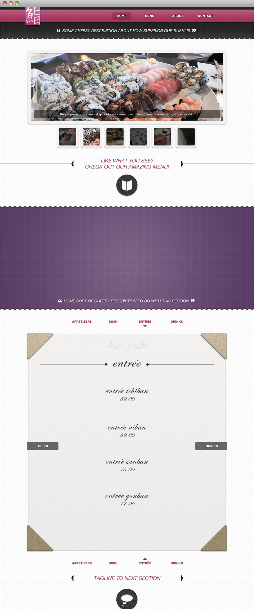
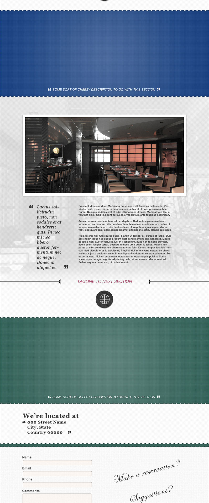
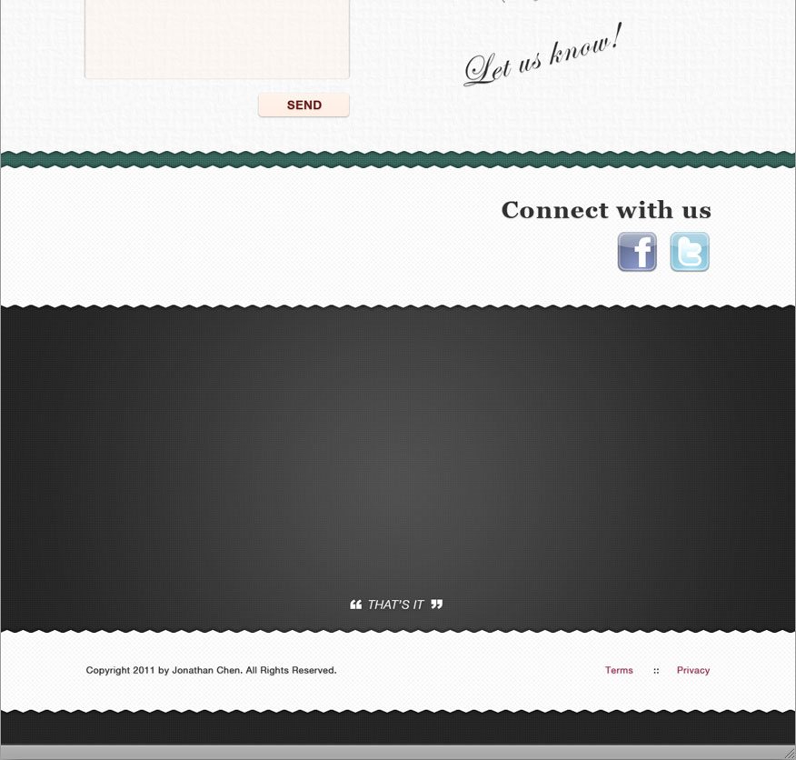
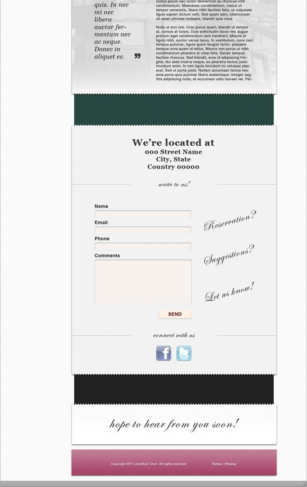
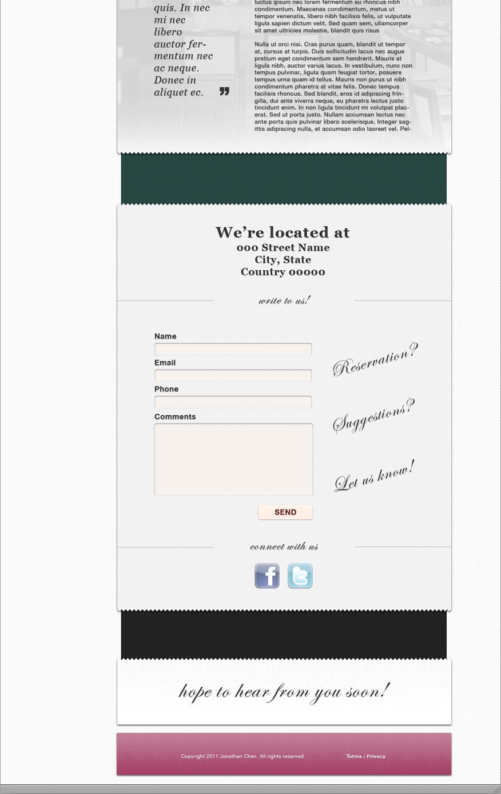
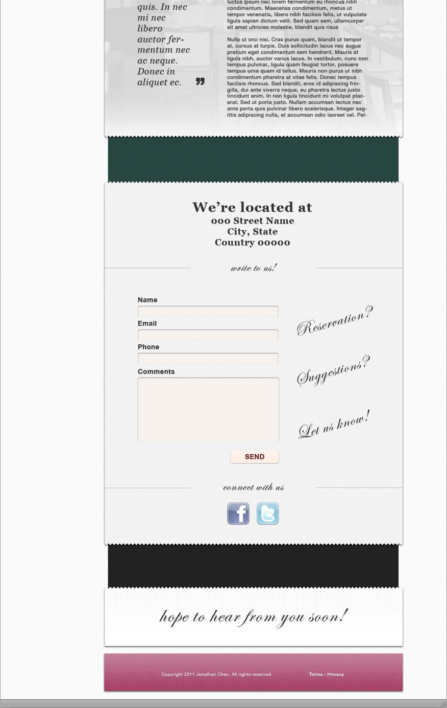

Oyasumi Sushi
Oyasumi Sushi is a fictional Japanese restaurant that focuses on the traditional sushi while still offering a Western-style cuisine. To suit the theme, the colors chosen for the design are traditional colors of the Japanese Kimonos. The objective was to create a one page scroller web design of two different variations.
Back to Showcase



 

Back to Showcase
